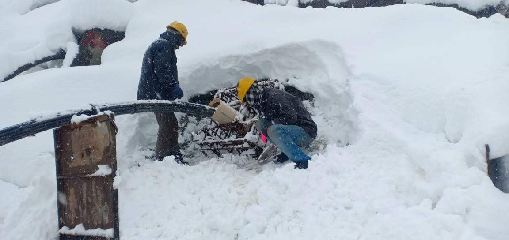
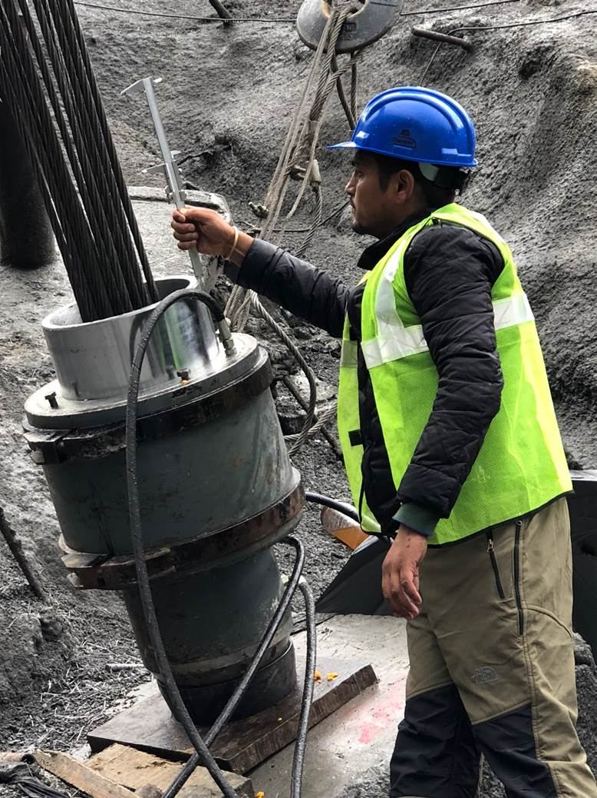
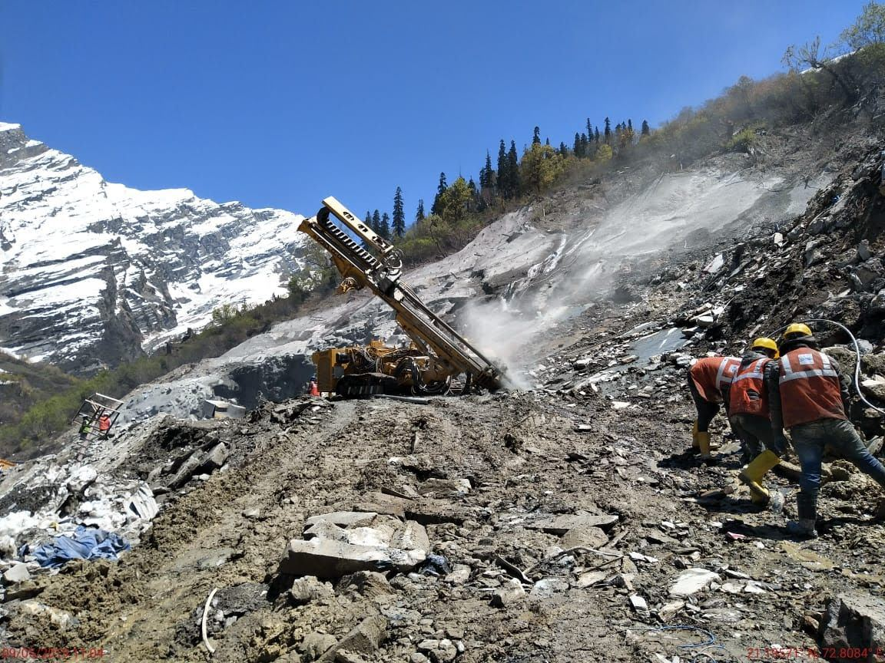
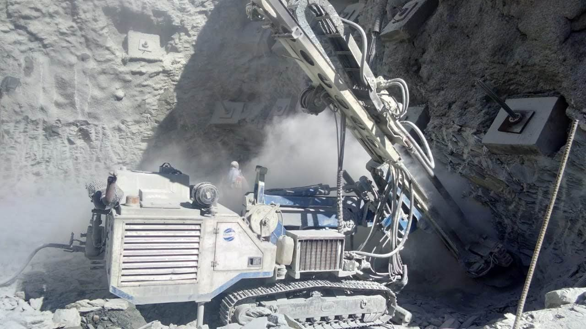
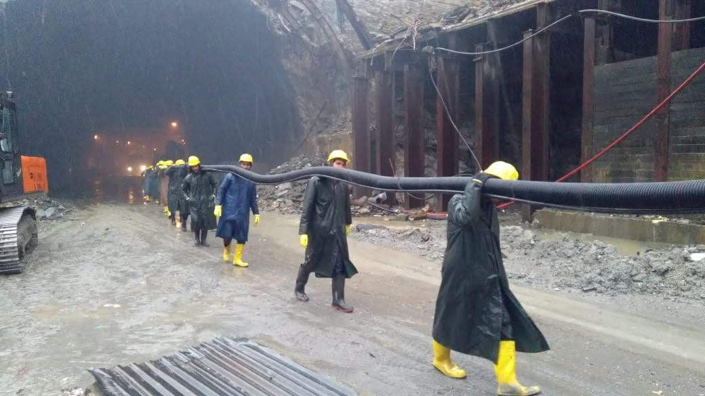

-

Atal Tunnel
-

Installation of Cable Anchor
-

Stressing of Cable Anchor
-

Drilling on the work site
-

Drilling
-

35 People carrying 750 Kgs of Cable Anchor for the installation
Introduction
The Border Roads Organization (BRO) works for the development of road network infrastructure in India’s border areas. After the formation of BRO on 7 May 1960, the organization is responsible for protecting and developing the border roads in the north and northeastern regions.
Atal (Rohtang) Tunnel is a highway tunnel constructed under the mentorship of Border Road Organization. The Rohtang Pass region provides fascinating lush beauty, famous for its mountain pass, with EL+ 13,058 ft, located on the eastern Pir Panjal Range. During most of the months, the pass is covered with heavy snowfall and blizzards, making the route inaccessible. To provide better road connectivity and reduce travel time, a tunnel of around 9.02 km long breaks between the south and north portal. The Rohtang Tunnel has been planned and designed to provide all-weather route connectivity to Leh and Lahaul Spiti valleys in Himachal Pradesh.
Geological Setup
The area around the proposed tunnel is situated in higher Himalayas across the PirPanjal range and Rohtang ridge (striking NW-SE direction), which marks the divide between the drainage system of River Chandra in the North and River Beas in the south.
The project location is situated in an NW-SE trending series of thrusts. It folds collectively called the Rohtang Axial Zone, representing a major tectonic divide, separating the Permian- Mesozoic Tandi basin to the SW from the Lahul-Spiti-Kinnaur Phanerozoic basin to the NE. Two dominant rock units lie within the region. A thick sequence of Schist and Phyllite (Salkhala Group) in the Central and South West areas of the project site. The soil in the study region is characterized as brown hill soils (over sandstones and shales), podsolic or sub-montane, and the glacial and eternal snow types, which are not fully developed as they are found in snow-covered areas.
The soil is generally thin but deep only in valleys. Sheet and gully erosion caused due to snowmelt is the predominant phenomenon in the region due to which the top layer of soil over large areas gets washed away. The texture of soil samples collected at site location such as sandy-loam, loam texture, and Muck from Rohtang tunnel, which consists of broken rocks, is sandy and falls under the class Loamy sand.
Problem
The approach of the tunnel portal was almost vertical, which could cause an unstable reach. In addition, the construction of the tunnel passage created destabilization of the slope near the portal. Combination of various problematic factors like vertical profile near the portal, thick overburden created slope instability problems. To construct a tunnel with keeping the region around the portal to be safe, the implementation of a suitable support system was necessary.
Solution
Spar Geo Infra Pvt. Ltd. was awarded the work to execute the installation of high capacity Cable Anchors at the Atal Tunnel region. Geo Spar did the complete work on cable anchors were designed as per BS 8081, and the ground Anchors were subjected to Proving test, Suitability test, and on-site acceptance test.
Preparation of approach & Platform for drilling of Cable Anchors
As the slope was covered with thick unstable overburden saturated with water seepage due to melting of snow above the surface. This caused a major hindrance for the preparation of the stable surface required for drilling of holes. Ramps were constructed to make a platform for the execution of anchor works.
Fractured rocks conditions poised drilling difficulties
During drilling fractured and fragile rocks were encountered at various intervals, which caused stucking of drill bits.
Water Penetration Test
WPT was carried out for each hole for Cable Anchor, and the holes that failed the WPT test were grouted and redrilled to maintainquality.
Passive Cable Anchors was big & bulky
The cable anchors of 3100kN capacity with the length of 50 meters weighed 850kgs each, and there was no way to mechanically carry these anchors to the designated locations from the fabrication yard. Thirty-five members of manpower were engaged to transport the cable anchors up to the distance of 500 mtrs for homing of these cable anchors on a marshy path.
Limited working period
The area of work was covered with snow for a period of 5-6 months from November to April. Huge snow covers on the uphill slopes were always a thread for Avalanches in the work area. During the early months of starting work, care was taken to avoid misshapes against Avalanches.
Extreme cold climatic conditions
Maintaining skilled manpower and machinery in good health was always a challenge in this region. The manpower was provided with adequate PPE’s to work in such climatic conditions.
Stressing of Cable Anchors
Speed of work being the essence of the project, it was required to carry out the cable anchors at a very fast pace. But the stressing of these cable anchors was not possible before the grout achieved a strength of 35mpa. Stressing of these installed cable anchors at such height and space constraint was again a challenge. Difficulties were faced for the installation of bearing plates and stressing jacks for stressing activity. The challenge was overcome by using hydraulic cranes of suitable capacity for the job.
Cable anchor Installation Process
A pre-stressed grouted cable anchor is a structural element installed in soil or rock used to transmit an applied tensile load into the ground. Pre stressed ground anchors act against the potential slip surface’s thrust and increase the normal stress on the potential slip surface. Both of these actions contribute to an increase in the stability of the slopes. Anchored slopes and landslide stabilization systems are designed to restrain forces associated with unstable ground masses.
Protection of Anchors against Corrosion
Double corrosion protection cable anchors were used for permanent anchoring, which has a long service life, and these are generally recommended for aggressive environments. In this system, a corrugated sheathing of high strength HDPE is installed over the anchor’s full length. The annular gap between anchor and HDPE is filled with grout before the installation of the anchor.
Conclusion
Spar Geo Infra Pvt. Ltd. completed the work on time and has become the first company in India to install 3100-kN capacity DCP Rock Cable Anchors (length: 50 Mtrs.) at a nearly vertical slope of 85 degrees at an altitude of 3,100 Mtrs for the stabilization of South Portal of the Atal Tunnel.